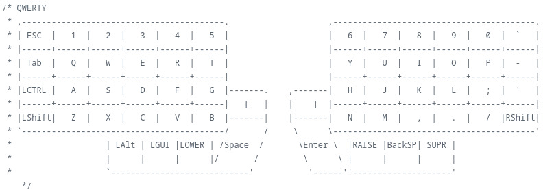

Teclado Lily58
Teclado ergonómico dividido de 68 teclas, optimizado con macros dedicadas para Neovim.
La documentación completa y los archivos para compilar mi distribución actual se encuentran en este repositorio.
Este proyecto nació de la necesidad de optimizar mi velocidad de escritura y ergonomía en el flujo de trabajo diario. A lo largo del diseño y ensamblaje surgieron diversos retos técnicos que fui resolviendo de forma iterativa.
El primer desafío fue diseñar la distribución de teclas (keymap). Al pasar de un teclado convencional (e incluso de uno con formato 60%) a un factor de forma compacto similar a un 40%, prescindí de teclas físicas como el bloque numérico, la fila de funciones (F1–F12) y las flechas de dirección. Para compensarlo eficientemente, organicé la distribución en tres capas lógicas: QWERTY (base), Lower y Raise.

Tomé como punto de partida la distribución original del Lily58 y la adapté progresivamente a mis hábitos de uso. Por ejemplo, al notar la alta frecuencia con la que utilizaba teclas como Inicio, Fin, Supr y AltGr, decidí ubicarlas en la esquina superior del bloque derecho para un acceso inmediato.

En el bloque izquierdo integré combinaciones y atajos directos para Neovim (nvim). Esta configuración mantiene las manos en la fila central (home row), eliminando desplazamientos innecesarios y aumentando notablemente la velocidad y comodidad al programar.

El control del hardware se gestiona mediante QMK, un firmware open source para teclados mecánicos que ofrece total flexibilidad para configurar capas dinámicas, macros avanzadas y comportamientos personalizados.
Pantalla OLED
Para la pantalla OLED decidí sustituir la animación por defecto por una secuencia de Serial Experiments Lain. Debido a que el firmware de QMK no reproduce archivos GIF de forma nativa, desarrollé un script en Python para descomponer la animación en fotogramas individuales y exportarlos como arreglos de bytes en formato .c, permitiendo renderizarlos de manera secuencial y fluida en la pantalla.


También personalicé el texto de estado cambiando el clásico «Hello Navi» por «Hello Rasgon», rotando la orientación de horizontal a vertical al estilo de la caligrafía japonesa tradicional.
El resultado ofrece una estética mucho más interactiva e inmersiva que el logotipo estático original, cuidando la sincronización de cuadros y la orientación de la pantalla.
Para el chasis utilicé un diseño optimizado para impresión 3D disponible en Printables, compatible con switches tipo MX.
Materiales
- PCB Lily58
- Switches Outemu Brown
- Keycaps PBT
- Chasis impreso en 3D
- Microcontroladores Pro Micro (2)
- Displays OLED 128x64 SSD1306 (2)
- Conectores Jack TRRS de 3.5 mm (2)
- Pulsadores de reinicio de 2 pines (2)
- LEDs SMD (retroiluminación estética)
- Tornillería: M3 (18 pzas) y M4 (10 pzas)
- Espaciadores: M3 de 7 mm (9 pzas) y M4 de 1 cm (5 pzas)
Compilación y Flasheo
Una vez configurada la distribución en el entorno de QMK, el proceso de compilación y carga se realiza con los siguientes comandos:
qmk new-keymap -kb lily58/rev1 -km kmpcd ~/qmk_firmware/keyboards/lily58/keymaps/kmpnvim keymap.cqmk compile -kb lily58/rev1 -km kmpqmk flash -kb lily58/rev1 -km kmp
Al ejecutar la orden de flasheo, la terminal esperará a que el microcontrolador entre en modo bootloader. Para activarlo, basta con presionar el botón de reset integrado en la PCB (o realizar un puente momentáneo entre los pines RST y GND).